Control de versiones y CI/CD - Parte I¶
1. Introducción¶
Necesitará una cuenta en GitHub y comunicar su usuario a través de una tarea en la plataforma. Ya se supone conocido el uso básico de Git y GitHub, Git Flow o el uso de ramas.
Además se repasa el uso de Pull Request (PR), y se introduce el uso de Actions y de Secrets de GitHub. Finalmente se integra todo lo anterior con un despliegue de contenedores en AWS.
2. Primera parte: forzar el uso de Pull Request¶
Pasos a dar:
-
Crear repositorio público en GitHub con fichero README.
-
Activar en la configuración del repositorio la protección de rama: Settings/Code Automation/Branches/Branch protection rules > Aviso: hay dos formar de definir estos setting, la "clasica" y la nueva. En las instrucciones usamos la clásica.
- Elegir
main - Activar Require a pull request before merging
- Activar Do not allow bypassing the above settings (para forzar a que el dueño del repositorio también tenga que hacer PR)
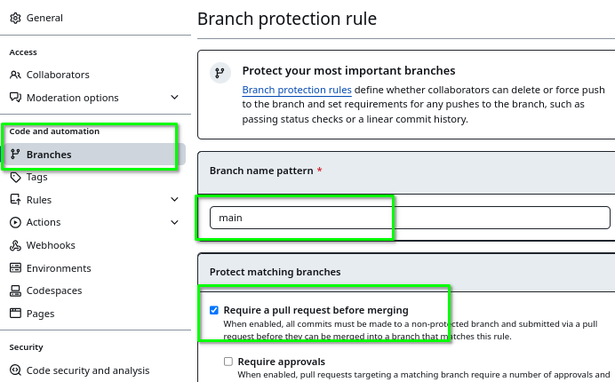
- Elegir
-
Clonar el repositorio creado en local. Use el acceso con certificado (o por token).
-
Cambiar al directorio creado
$ git clone git@github.com:userdemo/23-demo-pr.git $ cd 23-demo-pr/recordatorio: crear certificado (y luego subirlo a GH)
$ ssh-keygen -t ed25519 -C "sucorreo@midominio.com" $ cat .ssh/id_ed25519.pub -
Crear una rama con nombre por ejemplo
feature-xyzy moverse a ella.clases@vm:~/23-demo-pr$ git branch feature-xyz clases@vm:~/23-demo-pr$ git switch feature-xyz -
Crear un fichero de texto de prueba en la rama
feature-xyzclases@vm:~/23-demo-pr$ echo "fichero de prueba para hacer PR" > doc.txt clases@vm:~/23-demo-pr$ git add doc.txt clases@vm:~/23-demo-pr$ git commit -m "update para prueba de PR" [feature-xyz c974611] update para prueba de PR 1 file changed, 1 insertion(+) create mode 100644 doc.txt clases@vm:~/23-demo-pr$ -
Añadir el fichero al stage (
git add) y confirmarlo en el repositorio (git commit)clases@vm:~/23-demo-pr$ git add doc.txt clases@vm:~/23-demo-pr$ git commit -m "update para prueba de PR" [feature-xyz c974611] update para prueba de PR 1 file changed, 1 insertion(+) create mode 100644 doc.txt clases@vm:~/23-demo-pr$ -
Subir los cambios a GitHub mediante
git push: no se realiza al no estar definido el upstream de la ramaclases@vm:~/23-demo-pr$ git push fatal: La rama actual feature-xyz no tiene una rama upstream. Para empujar la rama actual y configurar el remoto como upstream, usa git push --set-upstream origin feature-xyz Para hacer que esto pase automáticamente para las ramas que no rastrean un upstream, mira 'push.autoSetupRemote' en 'git help config'. clases@vm:~/23-demo-pr$ -
El mensaje de error nos indica como proceder: hacer
git pushconfiguradno e indicando el upstream:clases@vm:~/23-demo-pr$ git push --set-upstream origin feature-xyz Enter passphrase for key '/home/clases/.ssh/id_ed25519': Enumerando objetos: 4, listo. Contando objetos: 100% (4/4), listo. Compresión delta usando hasta 4 hilos Comprimiendo objetos: 100% (2/2), listo. Escribiendo objetos: 100% (3/3), 317 bytes | 317.00 KiB/s, listo. Total 3 (delta 0), reusados 0 (delta 0), pack-reusados 0 remote: remote: Create a pull request for 'feature-xyz' on GitHub by visiting: remote: https://github.com/userdemo/23-demo-pr/pull/new/feature-xyz remote: To github.com:userdemo/23-demo-pr.git * [new branch] feature-xyz -> feature-xyz rama 'feature-xyz' configurada para rastrear 'origin/feature-xyz'. clases@vm:~/23-demo-pr$ -
Observe que en la salida del comando indica que es necesario crear un pull request y nos proporciona el enlace para hacerlo. Si lo sigue accedera a GitHub para abrir un Pull Request:
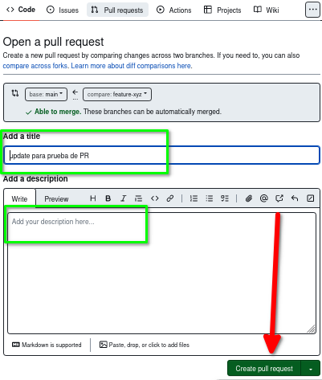
También es posible hacerlo accediendo a GitHub ya que detecta el
pushy nos ofrece hacer el PR: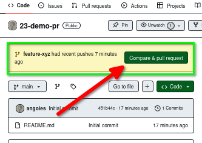
-
Crear el Pull Request
-
Una vez creado el PR puede revisarlo en la pestaña Pull Request antes de fusionar con la rama principal o
main.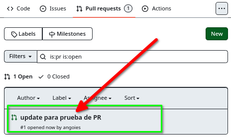
Observe que no se ha configurado ningún proceso de integración continua:
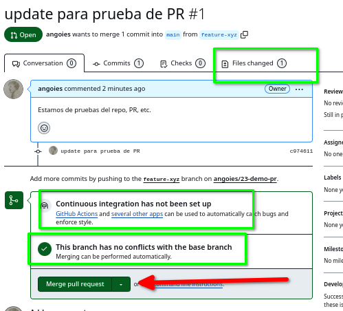
-
Pulse el botón Merge Pull Request y al confirmar el merge el fichero se añade a la rama principal.
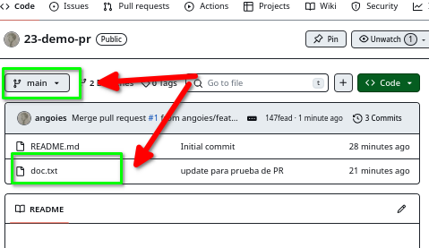
3. Segunda parte: Actions¶
3.1. Introducción¶
Las Actions de GitHub son una herramienta de integración continua (CI) y despliegue continuo (CD) proporcionada por GitHub. Te permiten automatizar flujos de trabajo relacionados con tu código, como la compilación, pruebas, despliegues y otras tareas personalizadas.
Principales características:
- Automatización de flujos de trabajo: Puedes crear archivos de configuración (generalmente en formato YAML) que definen una secuencia de pasos a ejecutar cada vez que ocurre un evento, como un push, pull request o publicación de una nueva versión (release).
- Ejecución en entornos personalizados: Las acciones pueden ejecutarse en entornos como Linux, Windows o macOS, utilizando runners proporcionados por GitHub o personalizados.
- Acceso a un ecosistema amplio: GitHub Actions tiene un mercado (GitHub Marketplace) con miles de acciones listas para usar, como herramientas de compilación, despliegues a la nube y gestión de dependencias.
- Alta flexibilidad: Puedes configurar desde tareas simples (por ejemplo, ejecutar tests) hasta flujos complejos que integren múltiples servicios.
Ventajas:
- Integrado en GitHub: No necesitas herramientas externas para automatizar.
- Escalabilidad: Puedes usar tanto runners gratuitos como configuraciones avanzadas.
- Colaborativo: Perfecto para equipos distribuidos que trabajan en proyectos abiertos o cerrados.
Como ejemplo se añadirá un Action. Su objetivo es que cuando se haga un PR a la rama principal se haga el proceso de linting de los ficheros nuevos o modificados en esa rama. El Action dará como resultado si el proceso de linting es correcto o no. En este ejemplo se usarán ficheros Python y como linter las herramientas pylint o flake8.
3.2. Action: definición¶
Las Action se configuran mediante ficheros YAML en el directorio .github/workflows. Puede usar las Actions que proporciona GitHub o crearla de forma manual usando la opción Skip this and set up a workflow yourself.
Para simplificar este apartado se le proporciona ya un fichero creado a partir de una de las Actions que proporciona GitHub.
Nota: En el marketplace hay otras soluciones para automatizar este proceso.
El fichero lint.yml es:
name: Pylint
on:
pull_request:
branches:
- main # Cambia según rama principal
paths:
- '**.py' # Se dispara sólo con esos ficheros
jobs:
build:
runs-on: ubuntu-latest
strategy:
matrix:
python-version: ["3.10", "3.13"]
steps:
# Paso 1: Checkout del repositorio
- name: Checkout Code
uses: actions/checkout@v4
# Paso 2: Configurar Python
- name: Set up Python ${{ matrix.python-version }}
uses: actions/setup-python@v4
with:
python-version: ${{ matrix.python-version }}
# Paso 3: Instalar dependencias
- name: Install dependencies
run: |
python -m pip install --upgrade pip
pip install pylint
# Paso 4: Ejecutar pylint
- name: Analysing the code with pylint
run: |
pylint $(git ls-files '*.py')
Este archivo define un GitHub Action para analizar el código Python con la herramienta pylint cada vez que se realice un pull_request . A continuación, se detalla el funcionamiento:
- Nombre del Workflow:
Pylint. - Evento Desencadenante: se ejecuta cuando hay un push al repositorio. Está configurado para ejecutarse solo si el push incluye cambios en archivos con la extensión
.py, lo que se define en la secciónpaths: - '**.py'. - Definición de los trabajos (
jobs): - Trabajo:
build:- Entorno de Ejecución: Se ejecuta en un sistema operativo
ubuntu-latest. - Estrategia de Matriz: El Action se ejecuta con dos versiones de Python (
3.9y3.10), probando cada una de manera independiente. - Pasos del Workflow:
- Checkout del Código: Utiliza la acción oficial
actions/checkout@v3para clonar el repositorio y obtener el código fuente. - Configuración de Python: Usa la acción oficial
actions/setup-python@v3para establecer el entorno Python correspondiente a la versión definida en la matriz (3.9o3.10). - Instalación de dependencias: Actualiza
pipy luego instalapylint, que es la herramienta de análisis de código. - Análisis del Código: Este comando encuentra todos los archivos .py rastreados por Git en el repositorio y los analiza con pylint. Los resultados del análisis se muestran en la salida del Action.
- Entorno de Ejecución: Se ejecuta en un sistema operativo
Como puede observar el objetivo principal de este Action es:
- Asegurar la calidad del código Python al verificar estándares de estilo y errores potenciales.
- Automatizar el análisis estático del código con
pylintpara cada push en el repositorio, reduciendo errores y manteniendo un código consistente.
3.3. Action: añadir al repositorio¶
Puede incorporar el fichero con la Action anterior de dos formas:
-
Añadir el Action desde la pestaña Actions de GitHub. Tendrá además que hacer un PR ya que no olvide que la rama
mainestá protegida. El Action se almacena en el directorio.github/workflows. Puede comprobar que se ha añadido correctamente en la pestaña de Actions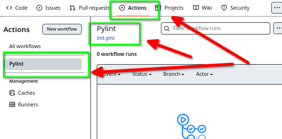
-
Crear el fichero en su repositorio local. Tendrá que crear el directorio
.github/workflowsy el fichero dentro del mismo. Luego trabajar en una rama, y subir el fichero a GitHub haciendo un Pull Request. Comprobar que se ha creado el Action en la pestaña Actions.
3.4. Action: prueba¶
Necesita un fichero Python en el repositorio local para subirlo y comprobar que el Action se activa y hace el linting. Para ello basta un fichero muy simple con algún error.
-
Crear el fichero Python
app.pyen su equipo:clases@vm:~/23-demo-pr$ git branch miapp clases@vm:~/23-demo-pr$ git switch miapp Cambiado a rama 'miapp' clases@vm:~/23-demo-pr$ code app.py clases@vm:~/23-demo-pr$ cat app.py """ Docstring del módulo """ def suma(a: int, b: int) -> int: """ docstring function # debe dar errores en linter """ x = "no se usa" return a+ b clases@vm:~/23-demo-pr$ -
Repetimos el proceso de
git add,git commit,git push, etcclases@vm:~/23-demo-pr$ git add app.py clases@vm:~/23-demo-pr$ git commit -m "añadimos fichero .py para probar Action" [miapp c02ded4] añadimos fichero .py para probar Action 1 file changed, 9 insertions(+) create mode 100644 app.py clases@vm:~/23-demo-pr$ git push fatal: La rama actual miapp no tiene una rama upstream. Para empujar la rama actual y configurar el remoto como upstream, usa git push --set-upstream origin miapp Para hacer que esto pase automáticamente para las ramas que no rastrean un upstream, mira 'push.autoSetupRemote' en 'git help config'. clases@vm:~/23-demo-pr$ git push --set-upstream origin miapp Enter passphrase for key '/home/clases/.ssh/id_ed25519': Enumerando objetos: 4, listo. Contando objetos: 100% (4/4), listo. Compresión delta usando hasta 4 hilos Comprimiendo objetos: 100% (3/3), listo. Escribiendo objetos: 100% (3/3), 485 bytes | 485.00 KiB/s, listo. Total 3 (delta 0), reusados 0 (delta 0), pack-reusados 0 remote: remote: Create a pull request for 'miapp' on GitHub by visiting: remote: https://github.com/userdemo/23-demo-pr/pull/new/miapp remote: To github.com:userdemo/23-demo-pr.git * [new branch] miapp -> miapp rama 'miapp' configurada para rastrear 'origin/miapp'. clases@vm:~/23-demo-pr$ -
Hay que hacer un Pull Request como indica la salida del comando.
- Una vez realizado revisarlo: vea como no se han superado los tests, pero aún así es posible hacer un merge e incorporar el fichero a la rama
main:
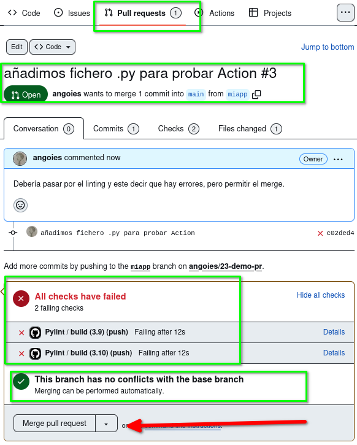
- Puede revisar los detalles del error en los Details:
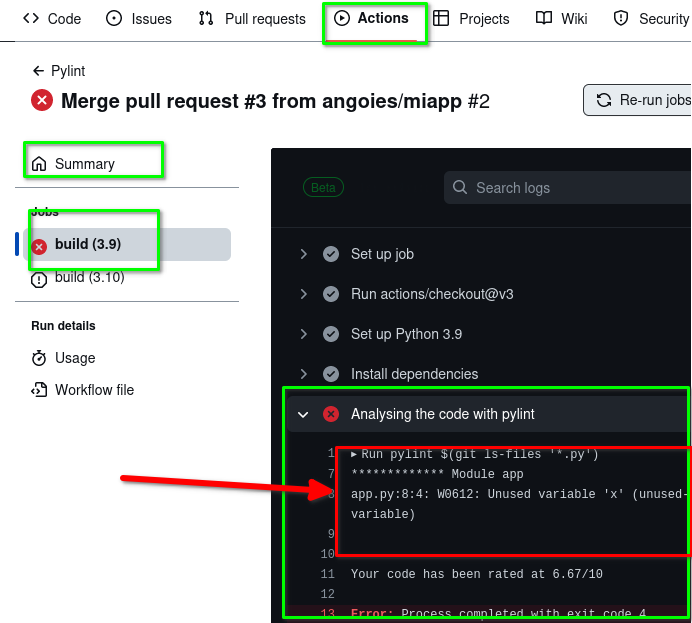
4. Tercera parte: Action con require status checks¶
El objetivo es impedir la fusión del código si no se superan los test del Action. Para ello es necesario hacer cambios en la configuración del repositorio.
4.1. Configurar el repositorio¶
Primero es necesario modificar algunos settings del repositorio. En este caso debe:
-
Activar la opción Branches/ Protect matching branches / Require status checks to pass before merging
- En la entrada de búsqueda se indican el nombre de las tareas del Action que debe superar. En cuanto escribe "build" le ofrece las dos posibilidades, coja la 3.10 por ejemplo (se pueden añadir varias)
- No olvide guardar los cambios.
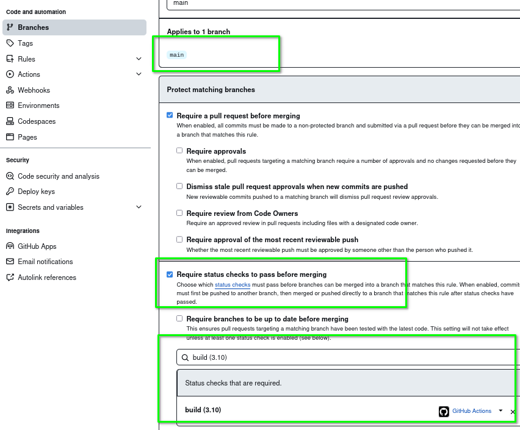
4.2. Probar Action con check status¶
Los pasos a dar son:
- Edite el fichero
app.py. Debe modificar algo para que se pueda hacer ungit commit, pero mantener el error de la variable no usada:clases@vm:~/23-demo-pr$ git add app.py clases@vm:~/23-demo-pr$ git commit -m "segunda prueba del Action: no debe dejar merge" [miapp 89a7343] segunda prueba del Action: no debe dejar merge 1 file changed, 4 insertions(+), 2 deletions(-) clases@vm:~/23-demo-pr$ -
Suba los cambios a Github:
clases@vm:~/23-demo-pr$ git push Enter passphrase for key '/home/clases/.ssh/id_ed25519': Enumerando objetos: 5, listo. Contando objetos: 100% (5/5), listo. Compresión delta usando hasta 4 hilos Comprimiendo objetos: 100% (3/3), listo. Escribiendo objetos: 100% (3/3), 347 bytes | 347.00 KiB/s, listo. Total 3 (delta 2), reusados 0 (delta 0), pack-reusados 0 remote: Resolving deltas: 100% (2/2), completed with 2 local objects. To github.com:userdemo/23-demo-pr.git c02ded4..89a7343 miapp -> miapp clases@vm:~/23-demo-pr$Observe que en este ejemplo
git pushbo ofrece configurar el upstream porque ya estaba hecho antes, ni ofrece el enlace al Pull Request. En este caso particular es debido a que se está trabajando sobre la misma rama y el Pull Request anterior no se ha cerrado (puede ser que en su ejecución sea distitno si ha iniciado una nueva rama por ejemplo). En este caso para continuar con el PR debe ir a GitHub, donde le indica esa posibilidad: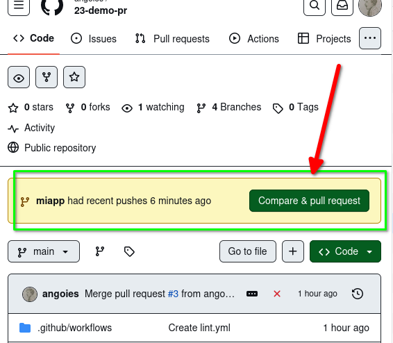
-
Puede comprobar en el Pull Request abierto que ahora no es posible aceptar los cambios y hacer un merge:
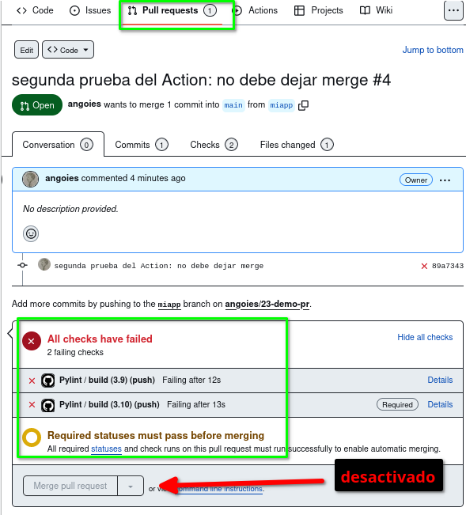
4.3. Corregir el código para superar el check¶
Posible proceso de correción:
- El adminstrador comenta en el PR que es necesario hacer correcciones.
- El editor en local revisa el código, corrige los errores y vuelve a realizar el push.
- Este nuevo commit se refleja en el Pull Request ya abierto.
-
Ahora el código si pasa el proceso de lintig y el administrador puede hacer el merge.
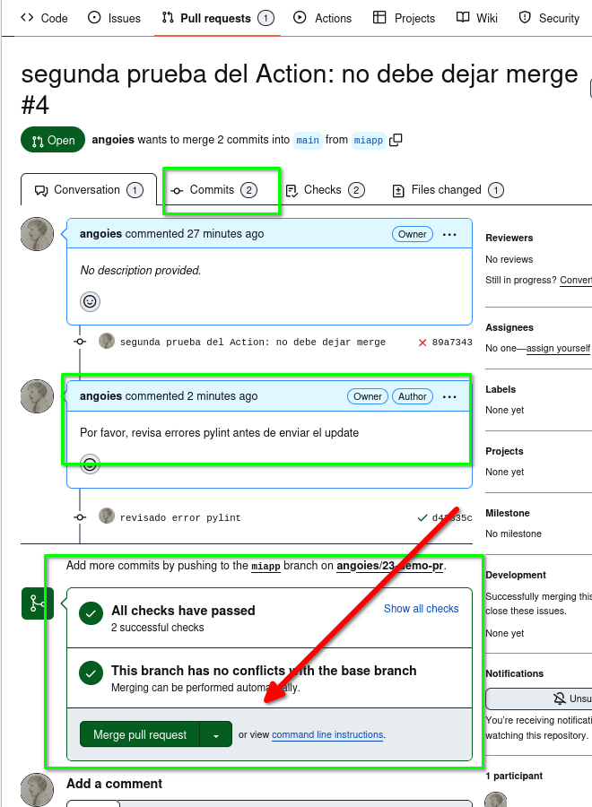
5. Ejercicio: añadir Testing¶
Se propone como ejercicio añadir al Action pruebas (testing) del código. Se le proporciona un fichero de pruebas test_app.py que verifica la función suma del código del módulo app.py. Este ejemplo usa el módulo unittest de Python.
import unittest
from app import suma
class SumaTest(unittest.TestCase):
""" Docstring class """
def test1(self):
""" Docstring def
"""
res = suma(1, 5)
self.assertEqual(res, 6)
def test2(self):
""" Docstring def """
res = suma(0, 0)
self.assertEqual(res, 0)
def test3(self):
""" Esta prueba DEBE FALLAR"""
res = suma("1", "4")
self.assertEqual(res, 5)
Para poder pasar esos test unitarios de forma automática debe modificar el fichero YAML y añadir un nuevo step que invoque las pruebas (usando el comando python3 -u -m unittest discover):
# .....
- name: Analysing the code with pylint
run: |
pylint $(git ls-files '*.py')
# Añadido para hacer testing
- name: Run Python unit tests
run: python3 -u -m unittest discover
6. Enlaces de ampliación¶
- Control de versiones
- Actions
- Python